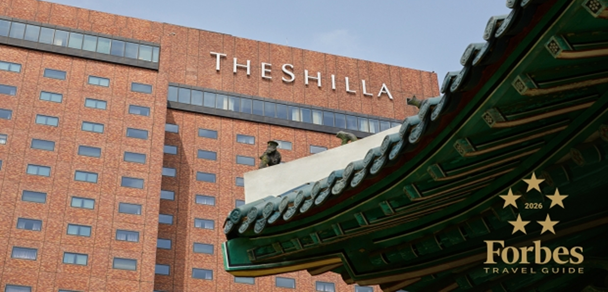
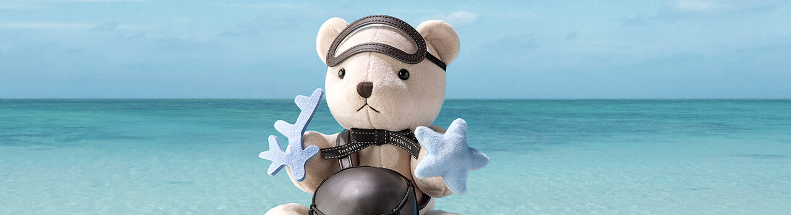
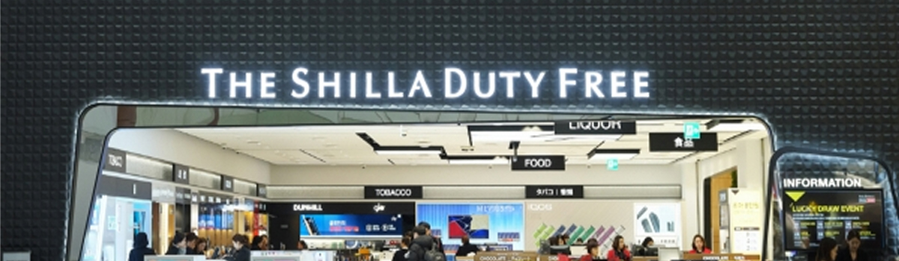
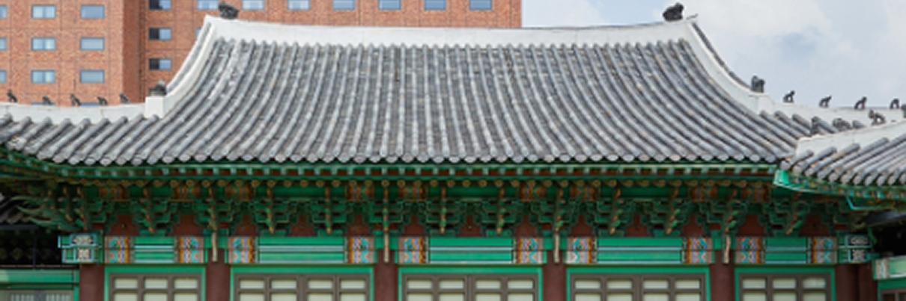
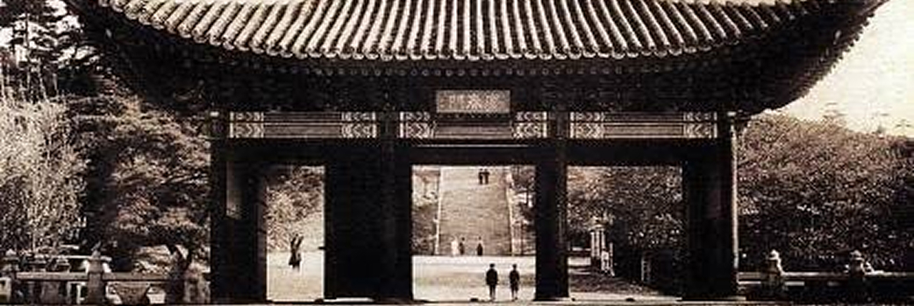

회사소개
회사소개
HOME > 회사소개 > 연혁
연혁History
전통의 품격과 혁신의 도전으로 완성해 온, 세계를 향한 감동의 여정
2020 's

-
- 2026
- FEB서울신라호텔 포브스 트래블 가이드 5스타 선정 (8년 연속), 신라모노그램 시안 오픈
- MARK-BPI 신라호텔 1위(9년 연속), K-BPI 신라스테이 1위(7년 연속)
- APR신라스테이 옌청 오픈
-
- 2025
- FEB서울신라호텔 포브스 트래블 가이드 5스타 선정(7년 연속)
- MARK-BPI 신라호텔 1위(8년 연속), K-BPI 신라스테이1위(6년 연속)
- JUL라리스트 월드 톱 200 호텔(국내 1위) 선정, 신라모노그램 강릉 호텔&레지던스 오픈
- DEC신라스테이 전주 오픈
-
- 2024
- FEB서울신라호텔 포브스 트래블 가이드 5스타 선정(6년 연속)
- MAY신라스테이 플러스 이호테우 오픈
- OCT라연, 콘티넨탈, 아리아께, 팔선 라리스트 2025등재
-
- 2020
- MARK-BPI 신라호텔 1위(3년 연속), K-BPI 신라스테이1위
- APR신라스테이 삼성 오픈
- JUN신라모노그램 다낭 소프트 오픈
- DEC제57회 무역의날 '9억불 수출탑' 선정
2010 's

-
- 2019
- JAN신라면세점 김포공항점 오픈
- FAV서울신라호텔 국내 호텔 최초 포브스 트래블 가이드 5스타 선정
- APR 인터브랜드 Best Korea Brands 50 선정
- NOV신라면세점 마카오공항점 오픈
-
- 2018
- JAN신라면세점 인천공항점 2터미널 오픈
- JUN신라면세점 홍콩공항점 그랜드 오픈
- OCTTR 온라인사업부 연매출 1조원 달성
- OCT서울신라호텔 한식당 라연 미쉐린 3스타 선정(3년 연속)
-
- 2017
- APR 신라스테이 서초 오픈
- APR 신라스테이 해운대 오픈
- DEC신라면세점 홍콩공항점 오픈
- APR신라스테이 해운대 오픈
-
- 2015
- FEB신라스테이 제주 오픈
- FEB신라스테이 싱가포르공항점 그랜드 오픈
- APR신라스테이 서대문 오픈
- JUL신라스테이 울산 오픈
- AUG신라스테이 마포 오픈
2000 's

-
- 2009
- APR서울신라호텔 Zagat 한국 최고 호텔 선정
- NOV서울신라호텔 Institutional Investor 세계 100대 호텔 선정
- NOV웹어워드 코리아 2009 수상
-
- 2008
- JAN서울신라호텔 Travel & Leisure 세계 500대 호텔 선정
- MAR 신라면세점 인천공항점 오픈
- MAY서울신라호텔 Zagat 서울지역 1위 호텔 선정
- NOV서울신라호텔 LHW 연차총회에서 아시아호텔 최초 Gold Award 수상
-
- 2007
- JAN서울신라호텔 Travel & Leisure 세계 500대 호텔 선정
- MAR서울신라호텔 Asiamoney 서울지역 1위 호텔 선정
- APR서울신라호텔 Zagat 세계 100대 호텔 선정
-
- 2005
- JAN서울신라호텔 Conde Nast Traveler Gold List 선정
- MAR서울신라호텔 Zagat 세계 100대 호텔 선정
- JUL서울신라호텔 Euromoney 서울지역 1위 호텔 선정
- DEC서울신라호텔 The Asset 서울지역 1위 호텔 선정
-
- 2002
- MAR서울신라호텔 Asiamoney 서울지역 1위 호텔 선정
- JUN서울신라호텔 Euromoney 서울지역 1위 호텔 선정
- AUG신라호텔 호텔업계 세계 최초, 인포 모바일 시스템 구축
- NOV서울신라호텔 Conde Nast Traveler 아시아 지역 30대 호텔 선정
1990 's
-
- 2000
- JUN신라면세점 신제주점 오픈
- OCT신라 인터넷면세점 오픈
- OCT서울신라호텔 Institutional Investor 세계 최고의 호텔 39위 선정
-
- 1998
- JAN서울신라호텔 Leaders 세계 10대 호텔 선정
- MAY서울신라호텔 '아시안비즈니스' 아시아 최고의 호텔 선정
- MAY호텔신라 '아시안비즈니스' 아시아에서 존경받는 기업 44위 선정
- SEP서울신라호텔 Institutional Investor 세계 최고의 호텔 41위 선정
-
- 1997
- MAR제주신라호텔 Meeting & Incentive Travel 세계 4대 호텔 선정
- SEP서울신라호텔 Fortune 서울지역 1위 호텔 선정
- NOV제주신라호텔 Fortune 한국 최고의 리조트 명소 선정
- NOVISO 14001국제인증 획득
-
- 1995
- JUL종업원 지주제 도입
- JUL호텔업계 최초 인터넷 서비스 개시
-
- 1994~1991
- 1994 DEC서울신라호텔 Institutional Investor 서울지역 1위 호텔 선정
- 1993 JUN코리안 컨트리클럽 식당 운영
- 1992 MAR동래 컨트리클럽 식당 운영
- 1991 DEC기업공개
1980 's

-
- 1990
- JUL제주신라호텔 개관
-
- 1989
- AUG신라면세점 제주점 오픈
- OCT관광업계 경영컨설팅사업 본격 개시
-
- 1987
- JAN서비스교육원 개원
-
- 1986
- JUL신라면세점 서울점 오픈
-
- 1985
- MAY대한생명 63빌딩 식당 기술용역 제공실시
-
- 1984
- AUG프레스센타 식당 운영계약체결
- OCT동방프라자 식당가 개업
-
- 1982
- SEP무역회관 클럽식당 수탁운영 개시
- NOV안양컨츄리클럽 식당 임차운영 개시
-
- 1981
- SEP제 8회 세계관광의날 국무총리상 수상
1970 's

-
- 1979
- MAR서울 호텔新羅 전관 개관